FRONT DIFFERENTIAL CARRIER ASSEMBLY > REASSEMBLY |
| 1. INSTALL FRONT DIFFERENTIAL CARRIER STRAIGHT PIN |
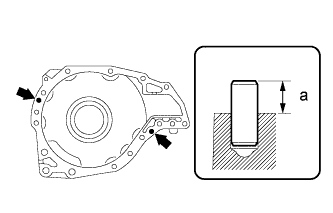 |
Using a plastic-faced hammer, tap in the straight pins until the protrusion height shown in the illustration is within the specification.
| 2. INSTALL FRONT DIFFERENTIAL TUBE STRAIGHT PIN |
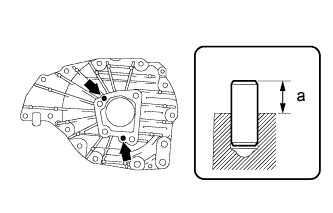 |
Using a plastic-faced hammer, tap in the straight pins until the protrusion height shown in the illustration is within the specification.
| 3. INSTALL FRONT DIFFERENTIAL SIDE GEAR SHAFT RH BEARING |
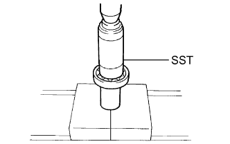 |
Using SST and a press, press in the bearing.
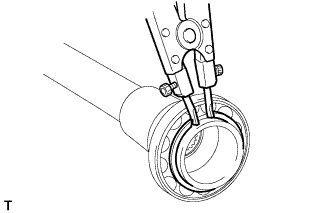 |
Using a snap ring expander, install a new snap ring.
| 4. INSTALL DIFFERENTIAL SIDE GEAR SHAFT SUB-ASSEMBLY RH |
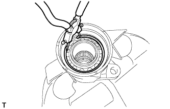 |
Install the side gear shaft into the differential tube.
Using snap ring pliers, install a new snap ring.
| 5. INSTALL DIFFERENTIAL SIDE GEAR SHAFT OIL SEAL |
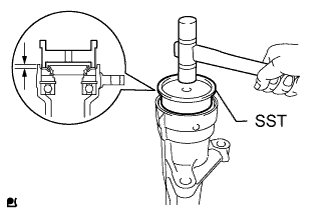 |
Using SST and a plastic-faced hammer, tap in a new oil seal.
Coat the lip of the oil seal with MP grease.
| 6. INSTALL FRONT NO. 1 DIFFERENTIAL CASE SUB-ASSEMBLY |
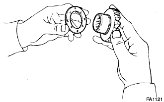 |
Install the 2 side gear thrust washers onto the 2 side gears.
Install the 2 side gears (with thrust washers), 2 pinion gears, 2 pinion gear thrust washers and pinion shaft into the differential case assembly.
Measure the side gear backlash.
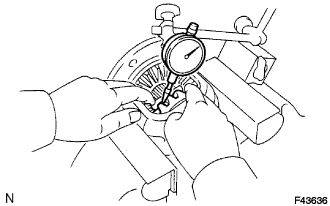 |
Using a dial indicator, measure the side gear backlash while holding one pinion gear toward the differential case assembly.
| Specified Condition | Specified Condition |
| 1.43 to 1.47 mm (0.0563 to 0.0579 in.) | 1.68 to 1.72 mm (0.0661 to 0.0677 in.) |
| 1.48 to 1.52 mm (0.0583 to 0.0598 in.) | 1.73 to 1.77 mm (0.0681 to 0.0697 in.) |
| 1.53 to 1.57 mm (0.0602 to 0.0618 in.) | 1.78 to 1.82 mm (0.0701 to 0.0717 in.) |
| 1.58 to 1.62 mm (0.0622 to 0.0638 in.) | 1.83 to 1.87 mm (0.0720 to 0.0736 in.) |
| 1.63 to 1.67 mm (0.0642 to 0.0657 in.) | - |
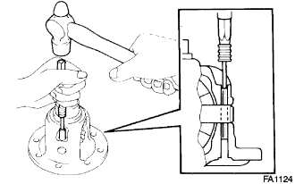 |
Using a pin punch and hammer, tap in the straight pin through the differential case and hole of the pinion shaft.
Stake the differential case.
| 7. INSTALL DIFFERENTIAL RING GEAR |
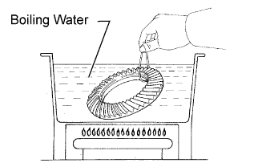 |
Clean the contact surfaces of the differential case and ring gear.
Heat the ring gear to about 100°C (212°F) in boiling water.
Carefully take the ring gear out of the boiling water.
After the moisture on the ring gear has completely evaporated, quickly align the matchmarks on the ring gear and differential case and set the ring gear onto the differential case. Then temporarily install the 10 bolts so that the bolt holes in the ring gear and differential case are aligned.
After the ring gear cools down sufficiently, remove the 10 bolts. Then apply adhesive to the 10 bolts and install them.
| 8. INSTALL FRONT DIFFERENTIAL CASE BEARING |
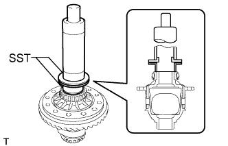 |
Using SST and a press, press in the 2 bearings (inner race).
| 9. INSTALL FRONT DIFFERENTIAL CASE BEARING |
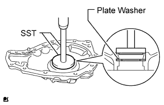 |
Install a new plate washer to the shaft bearing retainer.
Using SST and a press, press the bearing (outer race) into the differential case bearing retainer.
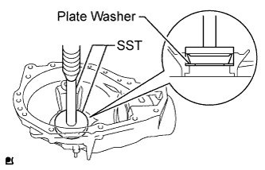 |
Install a new plate washer to the differential carrier.
Using SST and a press, press the bearing (outer race) into the differential carrier assembly.
| 10. INSTALL FRONT DRIVE PINION FRONT RADIAL BALL BEARING |
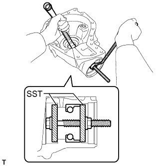 |
Using SST, install the bearing (outer race).
| 11. INSTALL FRONT DRIVE PINION REAR TAPERED ROLLER BEARING |
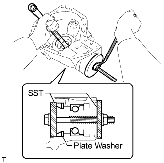 |
Using SST, install the washer and bearing (outer race).
| 12. INSTALL FRONT DRIVE PINION REAR TAPERED ROLLER BEARING |
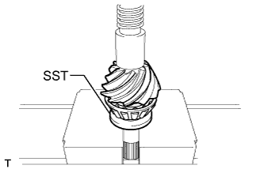 |
Using SST and a press, press in the bearing (inner race).
| 13. INSTALL FRONT DIFFERENTIAL UNION |
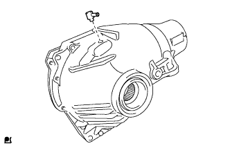 |
Install the front differential union to the differential carrier.
| 14. INSTALL FRONT DIFFERENTIAL BREATHER PLUG OIL DEFLECTOR |
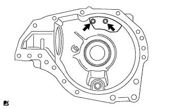 |
Install the 2 bolts and oil deflector.
| 15. TEMPORARILY INSTALL DIFFERENTIAL DRIVE PINION |
| 16. INSTALL FRONT NO. 1 DIFFERENTIAL CASE SUB-ASSEMBLY |
| 17. INSTALL FRONT DIFFERENTIAL CROSS SHAFT BEARING RETAINER |
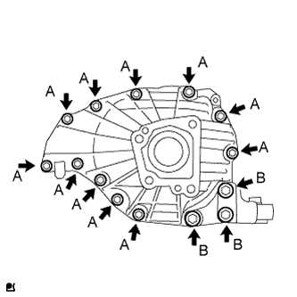 |
Install the differential cross shaft bearing retainer and differential support with the 14 bolts.
| 18. INSTALL FRONT DRIVE PINION FRONT RADIAL BALL BEARING |
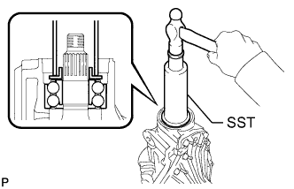 |
Using SST and a hammer, lightly tap in the bearing (inner race) to install it.
| 19. INSTALL FRONT DIFFERENTIAL DRIVE PINION OIL SLINGER |
| 20. INSPECT DIFFERENTIAL DRIVE PINION PRELOAD |
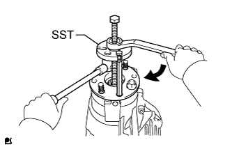 |
Using SST, install the companion flange.
Coat the threads of the nut with hypoid gear oil.
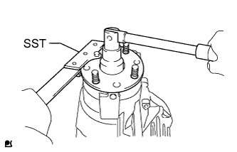 |
Using SST, hold the companion flange.
Install the nut by tightening it until the standard preload is reached.
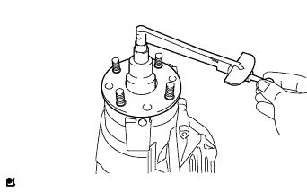 |
Using a torque wrench, measure the preload of the backlash between the drive pinion and ring gear.
| Bearing | Specified Condition |
| New | 3.0 to 3.5 N*m (31 to 35 kgf*cm, 27 to 50 in.*lbf) |
| Reused | 2.1 to 2.5 N*m (22 to 24 kgf*cm, 19 to 21 in.*lbf) |
| 21. ADJUST BACKLASH BETWEEN DIFFERENTIAL RING GEAR AND DIFFERENTIAL DRIVE PINION |
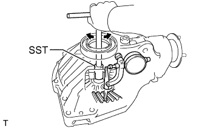 |
Using SST and a dial indicator, measure the ring gear backlash.
| Specified Condition | Specified Condition |
| 1.49 to 1.51 mm (0.0587 to 0.0594 in.) | 1.93 to 1.95 mm (0.0760 to 0.0768 in.) |
| 1.51 to 1.53 mm (0.0594 to 0.0602 in.) | 1.95 to 1.97 mm (0.0768 to 0.0776 in.) |
| 1.53 to 1.55 mm (0.0602 to 0.0610 in.) | 1.97 to 1.99 mm (0.0776 to 0.0783 in.) |
| 1.55 to 1.57 mm (0.0610 to 0.0618 in.) | 1.99 to 2.01 mm (0.0783 to 0.0791 in.) |
| 1.57 to 1.59 mm (0.0618 to 0.0626 in.) | 2.01 to 2.03 mm (0.0791 to 0.0799 in.) |
| 1.59 to 1.61 mm (0.0626 to 0.0634 in.) | 2.03 to 2.05 mm (0.0799 to 0.0807 in.) |
| 1.61 to 1.63 mm (0.0634 to 0.0642 in.) | 2.05 to 2.07 mm (0.0807 to 0.0815 in.) |
| 1.63 to 1.65 mm (0.0642 to 0.0650 in.) | 2.07 to 2.09 mm (0.0815 to 0.0823 in.) |
| 1.65 to 1.67 mm (0.0650 to 0.0657 in.) | 2.09 to 2.11 mm (0.0823 to 0.0831 in.) |
| 1.67 to 1.69 mm (0.0657 to 0.0665 in.) | 2.11 to 2.13 mm (0.0831 to 0.0839 in.) |
| 1.69 to 1.71 mm (0.0665 to 0.0673 in.) | 2.13 to 2.15 mm (0.0839 to 0.0846 in.) |
| 1.71 to 1.73 mm (0.0673 to 0.0681 in.) | 2.15 to 2.17 mm (0.0846 to 0.0854 in.) |
| 1.73 to 1.75 mm (0.0681 to 0.0689 in.) | 2.17 to 2.19 mm (0.0854 to 0.0862 in.) |
| 1.75 to 1.77 mm (0.0689 to 0.0697 in.) | 2.19 to 2.21 mm (0.0862 to 0.0870 in.) |
| 1.77 to 1.79 mm (0.0697 to 0.0705 in.) | 2.21 to 2.23 mm (0.0870 to 0.0878 in.) |
| 1.79 to 1.81 mm (0.0705 to 0.0713 in.) | 2.23 to 2.25 mm (0.0878 to 0.0886 in.) |
| 1.81 to 1.83 mm (0.0713 to 0.0720 in.) | 2.25 to 2.27 mm (0.0886 to 0.0894 in.) |
| 1.83 to 1.85 mm (0.0720 to 0.0728 in.) | 2.27 to 2.29 mm (0.0894 to 0.0902 in.) |
| 1.85 to 1.87 mm (0.0728 to 0.0736 in.) | 2.29 to 2.31 mm (0.0902 to 0.0909 in.) |
| 1.87 to 1.89 mm (0.0736 to 0.0744 in.) | 2.31 to 2.33 mm (0.0909 to 0.0917 in.) |
| 1.89 to 1.91 mm (0.0744 to 0.0752 in.) | 2.33 to 2.35 mm (0.0917 to 0.0925 in.) |
| 1.91 to 1.93 mm (0.0752 to 0.0760 in.) | - |
| 22. INSPECT TOTAL PRELOAD |
Using a torque wrench, measure the preload with the teeth of the drive pinion and ring gear in contact.
| Bearing | Specified Condition |
| New | Standard drive pinion preload plus 1.6 to 2.4 N*m (17 to 24 kgf*cm, 15 to 21 in.*lbf) |
| Reused | Standard drive pinion preload plus 1.3 to 2.1 N*m (14 to 21 kgf*cm, 12 to 18 in.*lbf) |
| 23. INSPECT TOOTH CONTACT BETWEEN RING GEAR AND DRIVE PINION |
Remove the bearing retainer and differential case.
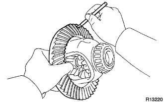 |
Coat 3 or 4 teeth at 3 different positions on the ring gear with Prussian blue.
Install the differential case to the differential carrier.
Install the differential cross shaft bearing retainer and front differential front support assembly LH with the 14 bolts.
Hold the companion flange firmly and rotate it in both directions.
Remove the 14 bolts, differential case, shaft bearing retainer and front support.
Inspect the tooth contact pattern.
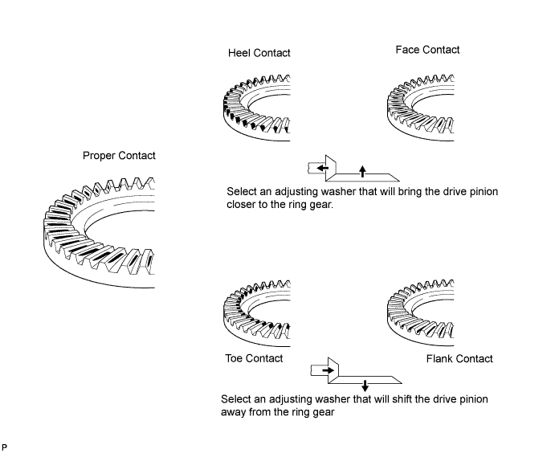
| Specified Condition | Specified Condition |
| 1.815 to 1.835 mm (0.0715 to 0.0722 in.) | 2.065 to 2.085 mm (0.0813 to 0.0821 in.) |
| 1.840 to 1.860 mm (0.0724 to 0.0732 in.) | 2.090 to 2.110 mm (0.0823 to 0.0831 in.) |
| 1.865 to 1.885 mm (0.0734 to 0.0742 in.) | 2.115 to 2.135 mm (0.0793 to 0.0841 in.) |
| 1.890 to 1.910 mm (0.0744 to 0.0752 in.) | 2.140 to 2.160 mm (0.0843 to 0.0850 in.) |
| 1.915 to 1.935 mm (0.0754 to 0.0762 in.) | 2.165 to 2.185 mm (0.0852 to 0.0860 in.) |
| 1.940 to 1.960 mm (0.0764 to 0.0772 in.) | 2.190 to 2.210 mm (0.0862 to 0.0870 in.) |
| 1.965 to 1.985 mm (0.0774 to 0.0781 in.) | 2.215 to 2.235 mm (0.0872 to 0.0870 in.) |
| 1.990 to 2.010 mm (0.0783 to 0.0791 in.) | 2.240 to 2.260 mm (0.0882 to 0.0890 in.) |
| 2.015 to 2.035 mm (0.0793 to 0.0801 in.) | 2.265 to 2.285 mm (0.0892 to 0.0900 in.) |
| 2.040 to 2.060 mm (0.0803 to 0.0811 in.) | - |
| 24. REMOVE FRONT DRIVE PINION COMPANION FLANGE SUB-ASSEMBLY |
Using SST, remove the companion flange from the differential carrier.
| 25. REMOVE FRONT DIFFERENTIAL DRIVE PINION OIL SLINGER |
| 26. REMOVE FRONT DIFFERENTIAL CROSS SHAFT BEARING RETAINER |
Remove the bolts labeled B and front differential front support assembly LH.
Remove the bolts labeled A.
Using a plastic-faced hammer, tap out the bearing retainer.
| 27. REMOVE NO. 1 FRONT DIFFERENTIAL CASE SUB-ASSEMBLY |
Remove the differential case from the differential carrier.
| 28. REMOVE DIFFERENTIAL DRIVE PINION |
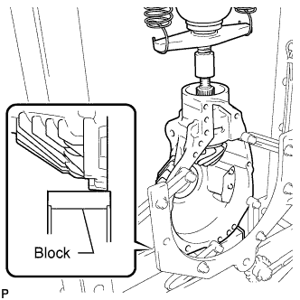 |
Set the differential carrier to an overhaul stand as shown in the illustration.
Using a press, press out the drive pinion.
| 29. REMOVE FRONT DRIVE PINION FRONT RADIAL BALL BEARING |
| 30. INSTALL FRONT DIFFERENTIAL DRIVE PINION BEARING SPACER |
Install a new bearing spacer.
| 31. TEMPORARILY INSTALL DIFFERENTIAL DRIVE PINION |
| 32. INSTALL NO. 1 FRONT DIFFERENTIAL CASE SUB-ASSEMBLY |
| 33. INSTALL FRONT DIFFERENTIAL CROSS SHAFT BEARING RETAINER |
Remove any old FIPG material and be careful not to drop oil on the contact surfaces of the differential carrier and shaft bearing retainer.
Wipe off any residual FIPG material on the contact surface using gasoline or alcohol.
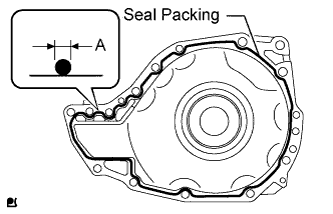 |
Apply seal packing to the shaft bearing retainer as shown in the illustration.
Install the front differential cross shaft bearing retainer and front differential front support assembly LH with the 11 bolts (A) and 3 new bolts (B).
| 34. INSTALL FRONT DRIVE PINION FRONT RADIAL BALL BEARING |
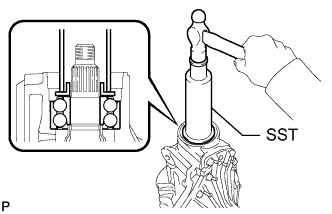 |
Using SST and a hammer, lightly tap in the bearing (inner race) to install it.
| 35. INSTALL FRONT DIFFERENTIAL DRIVE PINION OIL SLINGER |
| 36. INSTALL FRONT DIFFERENTIAL CARRIER OIL SEAL |
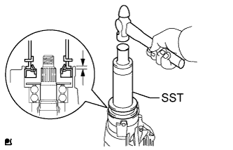 |
Using SST and a hammer, tap in a new oil seal.
Coat the lip of the oil seal with MP grease.
| 37. INSTALL FRONT DRIVE PINION COMPANION FLANGE SUB-ASSEMBLY |
Using SST, install the companion flange.
| 38. INSPECT DIFFERENTIAL DRIVE PINION PRELOAD |
Using SST, hold the companion flange.
Coat the threads of a new nut with hypoid gear oil.
Install the nut by tightening it until the standard preload is reached.
Using a torque wrench, measure the preload of the backlash between the drive pinion and ring gear.
| Bearing | Specified Condition |
| New | 3.0 to 3.5 N*m (31 to 35 kgf*cm, 27 to 50 in.*lbf) |
| Reused | 2.1 to 2.5 N*m (22 to 24 kgf*cm, 19 to 21 in.*lbf) |
| 39. INSPECT TOTAL PRELOAD |
With the drive pinion contacting the tooth side of the ring gear, use a torque wrench to measure the total preload.
| Bearing | Specified Condition |
| New | Standard drive pinion preload plus 1.6 to 2.4 N*m (17 to 24 kgf*cm, 15 to 21 in.*lbf) |
| Reused | Standard drive pinion preload plus 1.3 to 2.1 N*m (14 to 21 kgf*cm, 12 to 18 in.*lbf) |
| 40. INSPECT BACKLASH BETWEEN DIFFERENTIAL RING GEAR AND DIFFERENTIAL DRIVE PINION |
Using SST and a dial indicator, measure the ring gear backlash.
| 41. INSPECT RUNOUT OF FRONT DRIVE PINION COMPANION FLANGE SUB-ASSEMBLY |
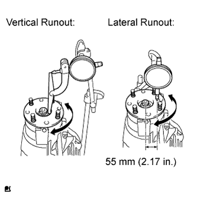 |
Using a dial indicator, measure the runout of the companion flange vertically and laterally.
| Runout | Specified Condition |
| Vertical runout | 0.10 mm (0.00394 in.) |
| Lateral runout | 0.10 mm (0.00394 in.) |
| 42. STAKE FRONT DRIVE PINION COMPANION FLANGE FRONT NUT |
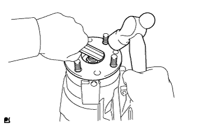 |
Using a chisel and hammer, stake the nut.
| 43. INSTALL DIFFERENTIAL SIDE GEAR SHAFT OIL SEAL |
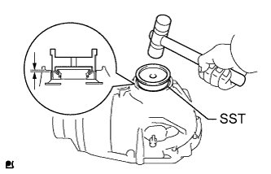 |
Using SST and a plastic-faced hammer, tap in a new oil seal until its surface is flush with the differential carrier end.
Coat the lip of the oil seal with MP grease.
| 44. INSTALL DIFFERENTIAL EXTENSION FLANGE TUBE |
Remove any old FIPG material and be careful not to drop oil on the contact surfaces of the differential tube and bearing retainer.
Wipe off any residual FIPG material on the contact surface using gasoline or alcohol.
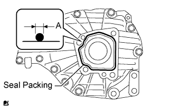 |
Apply seal packing to the bearing retainer as shown in the illustration.
Install the differential tube to the bearing retainer.
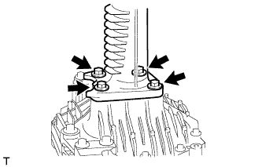 |
Install 4 new bolts.